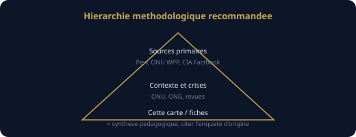

Support pédagogique — diversité musulmane dans le monde
Ce document complète la carte interactive. Il associe un diaporama illustré (schémas SVG) à des définitions alignées sur les usages des organismes de référence (Pew Research Center, Nations unies, CIA World Factbook) et sur la littérature de sciences des religions. Rien ne remplace la lecture des sources primaires pour un exposé noté ou médiatique.
Diaporama (8 écrans)
1 / 8
1. Objectif
Comprendre que « musulman » recouvre une diversité géographique, juridique et spirituelle. La carte affiche des ordres de grandeur démographiques (parts estimées, répartition sunnite/chiite dans le modèle), pas une norme théologique.
Cadre : neutralité du service public et sciences des religions — présentation descriptive, non confessionnelle (cf. programmes EMC / histoire-géo).
2. Lire la carte
Les teintes traduisent la part musulmane et, parmi les musulmans, le poids relatif sunnite/chiite selon data.js (agrégat pédagogique).
Le calque « tensions » est un indicateur didactique (0 à 3) : il ne correspond pas à une liste onusienne ni à un jugement juridique.
3. Sunnites — définition de référence
Les sunnites constituent la majorité des musulmans dans le monde selon les synthèses démographiques publiques (ex. Pew Research Center, rapports sur la population musulmane). Ils s’appuient sur le Coran et la Sunna ; la jurisprudence se structure historiquement en écoles (madhhab) : hanafite, malikite, chaféite, hanbalite — avec une grande diversité de courants et de pratiques locales.
Source type : Pew Research Center, rubrique Religion — méthodologies et tableaux par région : pewresearch.org/topic/religion
4. Chiites — définition de référence
Les chiites forment une minorité au niveau mondial mais des majorités nationales ou régionales (ex. Iran, Irak pour les imamites duodécimains). La tradition met l’accent sur la lignée des imams à partir d’Ali ; il existe plusieurs branches (imamites duodécimains, ismaéliens, zaïdis, etc.). Les statistiques agrègent souvent l’ensemble sous « chiite » : il faut nuancer pays par pays.
À croiser : fiches « Religions » du CIA World Factbook (indicatif, millésime variable) : cia.gov/…/field/religions
5. Ibadi et limites des statistiques
L’ibadisme est une branche distincte (référence majeure à Oman dans les données de la carte). Les catégories « sunnite / chiite » des enquêtes ne recensent pas toujours les sous-groupes (alaouites, alévis, etc.) : les pourcentages globaux peuvent masquer des réalités locales.
Méthode : lire les notes de bas de page et glossaires des enquêtes primaires, pas seulement les cartes agrégées.
6. Conflits — analyse multi-factorielle
Les crises contemporaines relèvent de causes politiques, économiques, historiques et sociales entremêlées. La dimension confessionnelle peut être mobilisée dans des rivalités d’État, des guerres civiles ou des logiques identitaires : la géographie et les sciences politiques recommandent d’éviter l’explication par une seule variable (« guerre de religion »).
Pour les contextes humanitaires : documentation ONU / UNHCR — à distinguer des statistiques religieuses.
7. En classe
Ouvrir la carte : cliquer sur deux pays contrastés, comparer population, parts et notes.
Activer le quiz (score affiché) en fin de séance ou en binômes.
Imprimer en paysage depuis le navigateur ; mode présentation (P hors champ de saisie) pour projeter.
8. Sources et citation

Pour tout exposé, article ou rapport : citer l’enquête ou la publication primaire (titre, auteur, année, URL ou référence bibliographique). La carte et data.js sont une synthèse intermédiaire — transparente mais non substitut aux sources.
Astuce : cliquez dans le cadre du diaporama puis utilisez les flèches ←→ du clavier.
Lire la carte sans surinterpréter
Les frontières et les pourcentages masquent des minorités, des migrations et des identités multiples. Un État « majoritairement sunnite » peut compter des millions de chiites (et inversement).
Les chiffres proviennent d’estimations et d’agrégats : ils servent à une vision d’ensemble pédagogique. Ils ne tranchent pas des débats théologiques ni ne remplacent une enquête de terrain ou un recensement officiel lorsqu’il existe.
Sunnisme, chiisme, ibadisme — rappels factuels
Sunnisme
Dans la littérature de référence en démographie religieuse, les sunnites sont présentés comme le plus grand ensemble au sein du monde musulman, avec une diversité juridique (madhhab) et spirituelle importante. La carte utilise des teintes vertes lorsque le modèle retient une dominance sunnite parmi les musulmans du pays.
Chiisme
Les chiites sont habituellement décrits comme une minorité globale mais majoritaires dans certains pays. La carte utilise des teintes bleues lorsque le modèle retient une part chiite majoritaire ou très significative parmi les musulmans.
Ibadisme
L’ibadisme est traité à part (teinte violette, ex. Oman) pour rappeler qu’il ne se confond pas avec les catégories sunnite/chiite des tableaux démographiques les plus courants.
Neutralité pédagogique : en France, l’enseignement des faits religieux relève des sciences des religions et des programmes officiels ; pour toute précision théologique avancée, renvoyer vers les spécialistes et les sources académiques.
Conflits et tensions — lecture critique
La liste suivante illustre des contextes souvent étudiés en géopolitique ; elle n’est pas exhaustive et évolue dans le temps.
Yémen
Guerre et crise humanitaire ; enjeux politiques et régionaux majeurs ; mobilisation d’identités diverses.
UNHCR — contextes de déplacement (distinct des statistiques confessionnelles).
Les définitions des diapositives 3–4 résument des formulations courantes dans ces rapports et dans les manuels de sciences des religions ; elles ne constituent pas un avis théologique.
Sources & méthode (dépôt)
Les chiffres dans l’application sont des synthèses pédagogiques. Pour un usage académique ou journalistique, vérifiez toujours les publications sources et leur date.
Pew Research Center — rapports religion / populations, tableaux et notes de méthode.
CIA World Factbook — rubrique religions et démographie par pays.
Nations unies (WPP) — totaux de population.
Banque mondiale, OCDE, revues démographiques — contexte économique et migrations.
Fichier détaillé : docs/SOURCES.md (markdown, téléchargeable depuis le dépôt).
Illustrations du diaporama : fichiers SVG vectoriels dans assets/img/pedagogie/ (créés pour ce projet, domaine public pédagogique).
La mention « 2026 » sur l’interface indique une cible de mise à jour pédagogique : elle n’implique pas que toutes les enquêtes primaires soient actualisées à cette année précise.